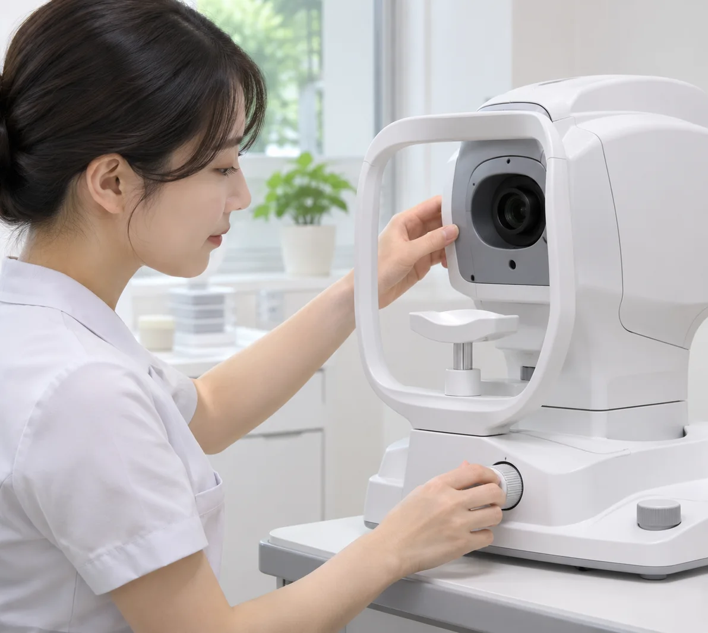
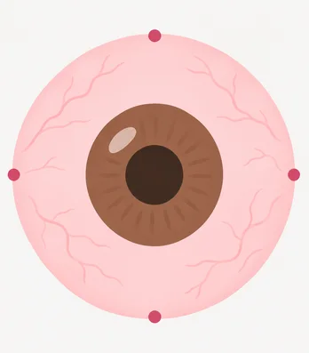
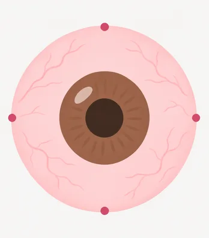
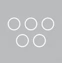
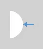
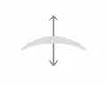
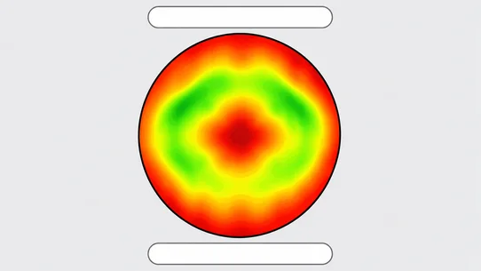
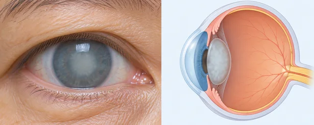
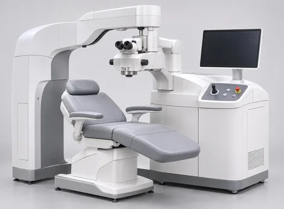

re-correction operation
라식 · 라섹 후 나타난 시력 퇴행,
그대로 방치해야 할까? NO
퇴행과 부작용을 바로잡아 삶의 질을 높이다
라식 · 라섹 후
근시퇴행 나타나는 원인?
시력교정 수술 뒤 레이저로 깎인 각막이
'상처 치유 반응'Wound Healing Resposse으로 인해 원상태로 복구되려는 성질,
원래대로 돌아가려는 성질 때문에 각막 실질부가 다시 차오르며
시력이 떨어지는 현상입니다.
여러 연구에 따르면 시력교정 수술 뒤
5~10년쯤 지나면 근시 퇴행이 생길 가능성이
높아지기 시작하며, 고도근시일수록
발생 가능성이 높아지는 것으로 알려져 있습니다.

수술 후 부작용, 시력 퇴행
재교정수술이 필요한 이유
라식 · 라섹 뒤 나타나는 시력 퇴행은 단순히
다시 안경을 써야 한다는 불편으로
그치지 않고,
시력퇴행 등 부작용의 원인이
될 수 있으므로
빠르고 정확한 치료가 필요합니다.
After surgery
수술 후 시간이 지나면서
서서히 발생하는 시력 퇴행 원인


-
각막 표면의 변화
각막 표면이 매끄럽지 않거나,
중심부 이탈, 중심부 융기, 부정난시,
각막혼탁 등이 발생할 경우 -
안구 길이의 변화
성장이 진행 중인 경우, 시력교정수술
후에도 안구의 길이가
길어져 근시가 진행됨 -
각막 두께의 변화
각막 표면이 비증식적으로 재생하여
각막 두께가 다시 두꺼워진 경우 -
수정체의 변화, 기타 안질환
백내장 수술 후 각막 난시가 남아
시력 저하 및 망막질환,
안구건조증, 결막염 등이 발생
degeneration of sight
재교정 수술을 위한
6단계 25가지 정밀 검사
-

01시력 검사
나안시력 측정, 자각식굴절검사,
타각식
굴절검사, 조절마비하굴절검사,
근거리
시력검사, 시기능 검사 -

02빛 번짐 검사
주·야간 동공크기 검사,
고위수차 검사 -
03
각막 강성도 검사
각막의 내구성 검사
-

04각막 두께 검사
각막 두께 검사, 각막 앞면 모양 검사,
각막 후면 모양 검사, 초음파 접촉시
각막 두께 검사 -
05
백내장, 녹내장, 망막 검사
수정체 투명도 검사, 수정체 굴절력 검사,
안구 길이 검사, 접촉식 안압 검사,
비접촉식 안압 검사,
시신경 검사,
안저촬영, 망막정밀검사 -
06
안구건조증 검사
눈물 분비량 검사, 눈물막 파괴시간
측정 검사, 삼투압 검사
서울시원안과의
재교정 수술
-
좁은 광학부 재교정
좁은 광학부(Small Optical Zone)란
각막에 레이저로 깎은 면이 너무 작게 된 경우입니다.어두운 환경에서는 동공이 넓어져 빛을 더 받아들입니다.
시력교정술로 깎은 각막 지름보다 동공이 더 커지면
빛 번짐이나 시력 저하가 나타날 수 있습니다.
서울시원안과는 이런 광학부 재교정 수술로
다시 또렷하게 볼 수 있도록 돕고 있습니다.
-
근시퇴행 재교정
보통 5~10년 뒤 근시 퇴행이 생길 수 있습니다.
평균적으로 교정 시력의 10~20% 안에서 퇴행이 일어납니다.재교정 수술은 먼저 정밀 검사로 근시 퇴행 원인을
분석합니다. 그다음 과거 수술 내역과 지금 각막 상태를 비교해
재교정 수술 계획을 세웁니다.안구건조증 치료를 충분히 먼저 하고, 눈 상태가
수술하기 좋은 상태가 되면 재수술을 진행합니다.정시근시퇴행 -
부정난시 교정
시력교정 수술 중 각막 일부가 깎이지 않았거나,
각막 표면의 굴곡이 달라지면
부정난시가 생기거나 각막 일부가 돌출될 수 있습니다.수술 뒤 처음엔 뚜렷한 불편이 없다가도 시간이 지나 변화를 느낄 수 있습니다.
시간이 지나 각막 상태가 변하면 시력이 달라지거나
빛 번짐을 느낄 수 있습니다.부정난시와 각막 융기는 각막 지형도 검사로 확인하고
굴절교정 수술로 다시 교정할 수 있습니다.-
정상
(정시안) -
부정난시
(각막실질염) -
부정난시
(각막편운)
-
-
각막혼탁 교정
각막은 유리처럼 투명한 조직입니다.
이 조직은 투명도를 잃고 하얗게 보일 수 있습니다.
각막이 흐려진 상태를 가리킵니다.서울시원안과는 각막 혼탁의 정도와 원인을 분석해
혼탁을 제거합니다.
혼탁이 다시 생기지 않도록 약물 치료도 함께합니다.혼탁이 심하면 각막이식도 고려합니다.

각막혼탁 사례
서울시원안과의
재교정 수술 사례 surgical case
수술장비
STAR S4 IR Excimer Laser
여러 나라에서 널리 쓰이는 엑시머 레이저 장비로,
넓은 범위의 시력 교정에 쓸 수 있습니다.
첨단 자동 홍채 인식 기능과 푸리에 방식
사용으로 인해
보다 정밀한 시력 교정이 가능합니다.

STAR S4IR Excimer Laser